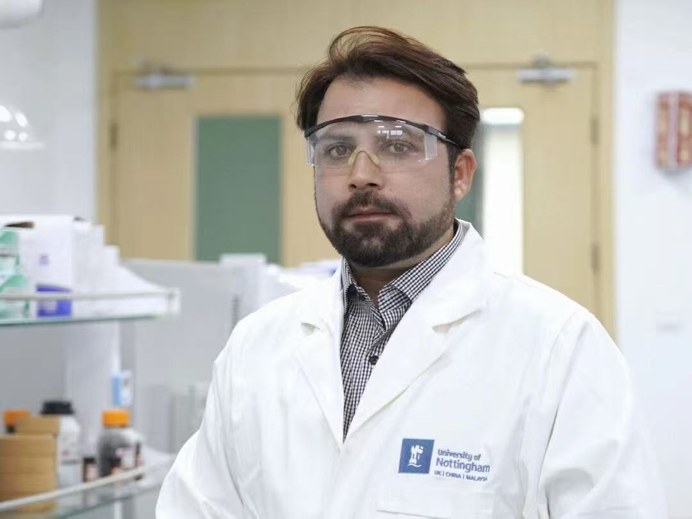

FOOD SAFETY · NANOMATERIALS · BIOSENSING
Imran Mahmood Khan
Assistant Professor in Smart Food FHEA
University of Nottingham Ningbo China
China Beacons of Excellence Research and Innovation Institute
I am an Assistant Professor in Smart Food at the University of Nottingham Ningbo China . My research brings together food safety, functional nanomaterials and molecular recognition to develop sensitive biosensors for food hazards and health biomarkers.
I work on aptamer engineering, optical and electrochemical sensing, and smartphone-readable, paper-based platforms for on-site detection. I received my PhD in Food Science and Engineering from Jiangnan University in 2020, supervised by Prof. Zhouping Wang, and my MPhil in Food Science and Technology from the University of Agriculture, Faisalabad, in 2015.
Research interests Aptasensors Point-of-care testing Mycotoxin detection Nanomaterials Bioimaging
Biosensing strategies for safer food and better health. Explore the papers below.
No matching papers Try a different keyword, research area or year.
Reset filters Enable JavaScript to search the publication list. You can also view the complete publication record on Google Scholar .
Publication figures and graphical abstracts are credited to the linked articles. Image credits
Selected grants & collaborations
2024–2027NSFC · Co-PI
Aptamer conformation and stability in food matrices Understanding target binding, conformational dynamics and matrix effects to improve the reliability of aptamer-based sensing.
National Natural Science Foundation of China · Grant 32372423 2025NSFC · PI
Smartphone aptasensors for Fusarium mycotoxins Multiplexed, portable detection of mycotoxins in Chinese staple cereals, with regional occurrence mapping and growth-stage analysis.
National Natural Science Foundation of China · W2433060 2025–2026UNNC · PI
Wireless wearable sensing for ammonia hazards N-Melon sensor materials, point-of-care devices and machine learning for real-time ammonia monitoring and food spoilage assessment.
Interdisciplinary Research Engagement · IRE202509017 2024–2029China Beacons · PI
Smart Food and Sensing Laboratory Developing biosensing probes, research instrumentation and a platform for doctoral research in food safety and functional materials.
Annual Faculty Support Fund
Academic background 2024–present Assistant Professor University of Nottingham Ningbo China 2016–2020 PhD · Food Science and Engineering Jiangnan University, China 2013–2015 MPhil · Food Science and Technology University of Agriculture, Faisalabad, Pakistan Research supervision I supervise and co-supervise doctoral and master's research across food safety, biosensors and functional nanomaterials.
Deep learning-assisted mycotoxin test strips 2D nanomaterials for ammonia and spoilage sensing High-affinity aptamers for mushroom toxins Bio-inks and functional food formulations Nanomaterials for antimicrobial and health applications Discuss a research collaboration ↗
Selected recognition World's Top 2% Scientists Stanford / Elsevier · 2024 & 2025 Ningbo High Talent Introduction Program Senior Talent recognition · 2024 Outstanding International PhD Student Award Jiangsu Province · 2019 China Scholarship Council Doctoral scholarship · 2016–2020 Editorial & professional service Scientific Reports · Nature Portfolio Editorial Board Member · since 2024 MBEMat · Wiley Editorial Board Member · since 2026 Biosensors · MDPI Guest editor for food safety and healthcare collections Peer review Analytical Chemistry, Biosensors and Bioelectronics, Journal of Hazardous Materials and other journals